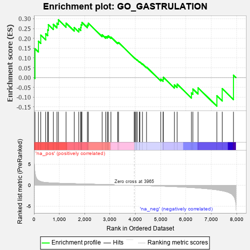
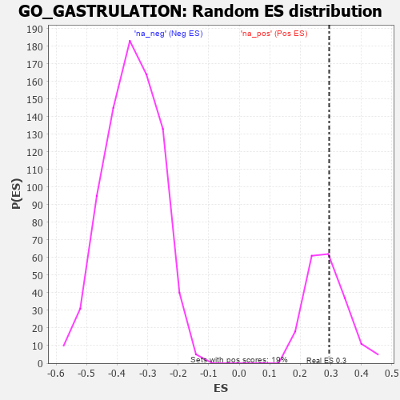

| | | Dataset | 7d |
| Phenotype | NoPhenotypeAvailable |
| Upregulated in class | na_pos |
| GeneSet | GO_GASTRULATION |
| Enrichment Score (ES) | 0.29444283 |
| Normalized Enrichment Score (NES) | 1.029693 |
| Nominal p-value | 0.3969072 |
| FDR q-value | 0.70682126 |
| FWER p-Value | 1.0 |
Table: GSEA Results Summary

Fig 1: Enrichment plot: GO_GASTRULATION
Profile of the Running ES Score & Positions of GeneSet Members on the Rank Ordered List
| PROBE | GENE SYMBOL | GENE_TITLE | RANK IN GENE LIST | RANK METRIC SCORE | RUNNING ES | CORE ENRICHMENT | | 1 | SIX2 | | | 40 | 3.152 | 0.1474 | Yes |
| 2 | FOXF1 | | | 176 | 1.136 | 0.1853 | Yes |
| 3 | TBX20 | | | 267 | 0.880 | 0.2165 | Yes |
| 4 | LEO1 | | | 463 | 0.655 | 0.2236 | Yes |
| 5 | SRF | | | 542 | 0.615 | 0.2435 | Yes |
| 6 | HIRA | | | 568 | 0.608 | 0.2697 | Yes |
| 7 | UGDH | | | 764 | 0.540 | 0.2712 | Yes |
| 8 | WLS | | | 907 | 0.505 | 0.2777 | Yes |
| 9 | CTR9 | | | 964 | 0.492 | 0.2944 | Yes |
| 10 | CDC73 | | | 1265 | 0.436 | 0.2777 | No |
| 11 | PAF1 | | | 1588 | 0.376 | 0.2552 | No |
| 12 | LRP5 | | | 1769 | 0.342 | 0.2491 | No |
| 13 | RTF1 | | | 1844 | 0.329 | 0.2557 | No |
| 14 | SMAD4 | | | 1860 | 0.326 | 0.2695 | No |
| 15 | CUL3 | | | 1893 | 0.321 | 0.2810 | No |
| 16 | BMP7 | | | 2107 | 0.290 | 0.2682 | No |
| 17 | ATOH8 | | | 2145 | 0.285 | 0.2773 | No |
| 18 | KDM6A | | | 2690 | 0.200 | 0.2183 | No |
| 19 | RIC8A | | | 2833 | 0.179 | 0.2091 | No |
| 20 | FGFR2 | | | 2895 | 0.167 | 0.2095 | No |
| 21 | ACVR1 | | | 2932 | 0.161 | 0.2127 | No |
| 22 | LEF1 | | | 3037 | 0.144 | 0.2066 | No |
| 23 | SMAD3 | | | 3303 | 0.105 | 0.1782 | No |
| 24 | SMAD1 | | | 3337 | 0.099 | 0.1788 | No |
| 25 | EXT1 | | | 3954 | 0.001 | 0.1012 | No |
| 26 | EYA1 | | | 3987 | -0.006 | 0.0974 | No |
| 27 | SYF2 | | | 4008 | -0.009 | 0.0953 | No |
| 28 | TAL1 | | | 4064 | -0.018 | 0.0893 | No |
| 29 | SFRP2 | | | 4065 | -0.018 | 0.0902 | No |
| 30 | HNF4A | | | 4157 | -0.034 | 0.0803 | No |
| 31 | EXOC4 | | | 4182 | -0.039 | 0.0792 | No |
| 32 | WNT11 | | | 4282 | -0.056 | 0.0694 | No |
| 33 | SETD2 | | | 4443 | -0.084 | 0.0533 | No |
| 34 | KLF4 | | | 5005 | -0.198 | -0.0079 | No |
| 35 | ETS2 | | | 5096 | -0.223 | -0.0085 | No |
| 36 | MMP9 | | | 5108 | -0.227 | 0.0012 | No |
| 37 | FGFR1 | | | 5543 | -0.332 | -0.0376 | No |
| 38 | WNK1 | | | 5650 | -0.362 | -0.0334 | No |
| 39 | SMAD2 | | | 6216 | -0.541 | -0.0785 | No |
| 40 | HSBP1 | | | 6273 | -0.562 | -0.0584 | No |
| 41 | SOX2 | | | 6477 | -0.652 | -0.0525 | No |
| 42 | LAMB1 | | | 7220 | -1.094 | -0.0931 | No |
| 43 | LHX1 | | | 7431 | -1.305 | -0.0565 | No |
| 44 | MMP2 | | | 7875 | -2.574 | 0.0121 | No |
Table: GSEA details [plain text format]

Fig 2: GO_GASTRULATION: Random ES distribution
Gene set null distribution of ES for GO_GASTRULATION